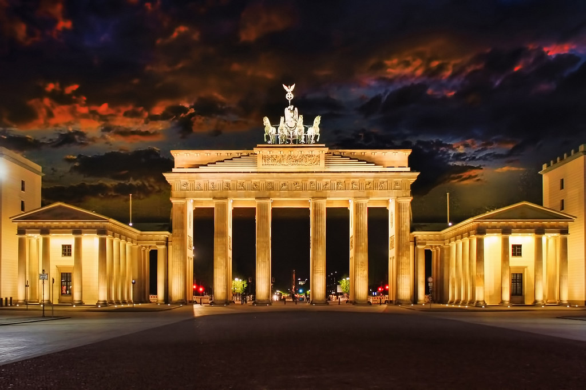
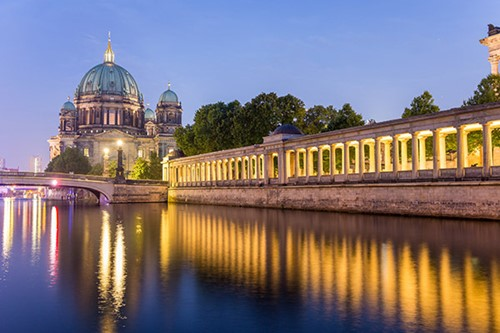
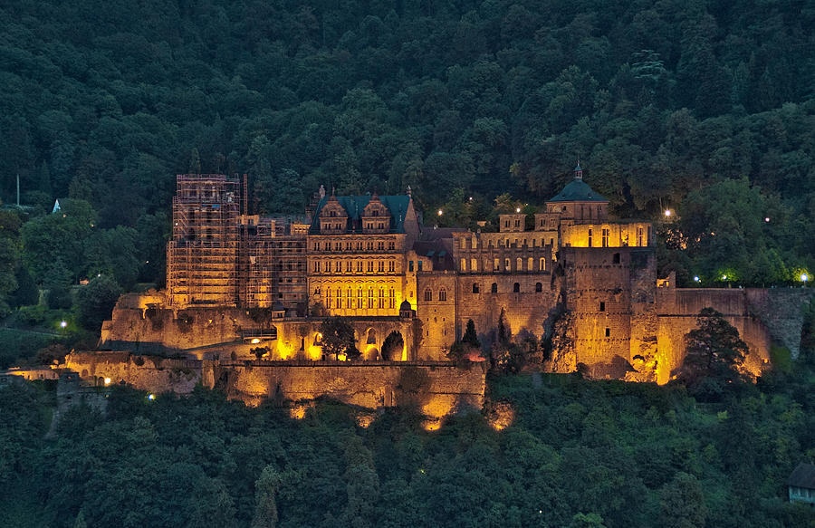
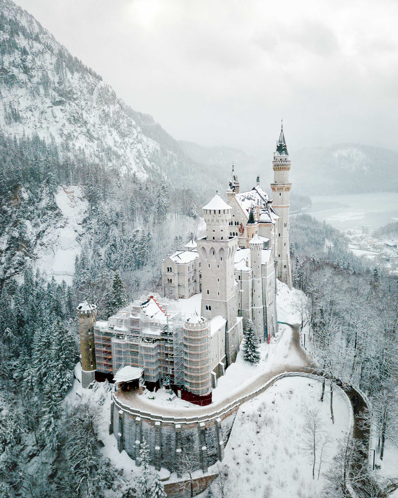
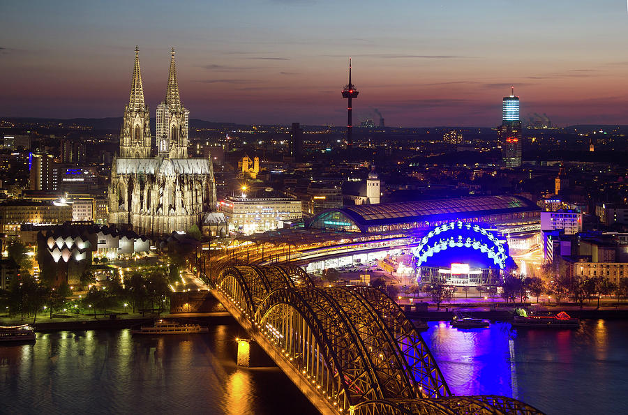
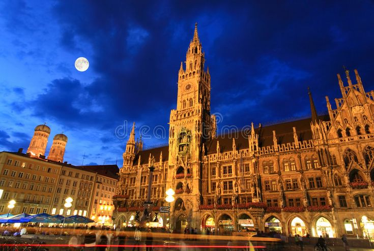

Brandenburg Gate (Berlin)


Standing as a proud emblem of Berlin’s history and resilience, the Brandenburg Gate welcomes visitors with its neoclassical elegance. Once a
symbol of division during the Cold War, it now embodies unity, peace, and the heartbeat of a reunified Germany. Walk beneath its grand arches, feel
centuries of stories unfolding from Napoleonic triumphs to peaceful revolutions, and capture the essence of a nation that has continually reinvented
itself. It is definitely worth visiting to experience not just German history and culture, but to witness how architecture can transform from a
barrier into a bridge connecting past, present, and future — all while feeling the vibrant rhythm of contemporary Berlin life pulsing around this
timeless monument.
Best time to visit:
Early morning or late evening to avoid crowds and catch soft lighting for photos.
Opening hours:
Always open — it’s an outdoor monument accessible 24/7.
Entry:
Free to visit; no tickets required.
SEE MAP
Museum Island (Berlin)


Nestled in the heart of Berlin on the Spree River, Museum Island is a treasure trove of art, history, and culture. This UNESCO World
Heritage site houses five world-renowned museums, each offering masterpieces from ancient civilizations to 19th-century European art.
Wander through grand halls, marvel at timeless artifacts, and feel the pulse of centuries past. A captivating destination for curious
minds and culture lovers, Museum Island invites you to explore Berlin’s artistic soul.
Best time to visit:
Weekday mornings for fewer crowds; spring and autumn are ideal for combining museums with walks along the Spree River.
Opening hours:
Daily; most museums are open from around 10:00–18:00, with extended hours on certain days (often Thursdays). Hours vary by museum.
Entry:
Individual museum tickets range from approx. €10–€14. A combined Museum Island day pass is available and offers better value.
SEE MAP
Heidelberg Castle


Perched above the picturesque Neckar River, Heidelberg Castle stands as a symbol of romance, history, and architectural grandeur.
Its red sandstone walls, ornate facades, and sprawling terraces offer breathtaking views of the old town below. Wander through its
courtyards, explore centuries-old halls, and let the whispers of kings, poets, and scholars transport you to a bygone era.
A must-visit for those seeking beauty, history, and a touch of enchantment in Germany.
Best time to visit:
Spring and early autumn for mild weather and beautiful views over the Old Town and Neckar River.
Opening hours:
Daily; castle grounds open year-round from morning until evening. Museum and Great Barrel have set hours, usually 9:00–18:00 (shorter in winter).
Entry:
Castle courtyard is free to enter. Museum and interiors require a ticket (approx. €9); funicular ride to the castle is usually included.
SEE MAP
Neuschwanstein Castle (Bavaria)


Perched on a rugged hill and surrounded by misty mountains, Neuschwanstein Castle looks as if it stepped straight out of a fairy tale.
With its turrets, towers, and romantic interiors, it tells the story of King Ludwig II’s dreams brought to life. Wander through its
majestic halls, gaze across the Bavarian landscape, and experience the magic that has inspired countless legends and imaginations.
Best time to visit:
Late spring to early autumn for clear views and green landscapes; arrive early in the morning to avoid crowds.
Opening hours:
Daily; generally 9:00–18:00 in summer and 10:00–16:00 in winter (hours vary by season).
Entry:
Interior visits require a ticket (approx. €15). Castle can only be visited with a guided tour. The surrounding area and viewpoints are free to access.
SEE MAP
Cologne Cathedral (Köln)


Rising dramatically above the Rhine River, Cologne Cathedral is a masterpiece of Gothic architecture and a symbol of enduring faith that took over
six centuries to complete. Its twin spires, intricate stone carvings, and stunning stained-glass windows captivate visitors from near and far,
telling biblical stories through light and shadow. Step inside to feel the grandeur of centuries-old chapels, marvel at the soaring vaults that
seem to touch the divine, and experience a sense of awe that only this iconic landmark can inspire. A must-visit for lovers of history, art, and
spiritual beauty in Germany.
Best time to visit:
Early morning for a quieter experience, or late afternoon to see the cathedral glowing in golden light.
Opening hours:
Daily; cathedral usually open from early morning until early evening (hours may vary for services). Tower climb has separate hours,
typically 9:00–16:00.
Entry:
Free entry to the cathedral. Tower climb requires a ticket (approx. €6); treasury museum has a small additional fee.
SEE MAP
Marienplatz, Munich


The heart of Munich, pulses with centuries of history and lively modern charm. From the soaring spires of the New Town Hall to
the enchanting Glockenspiel that dances every day, the square invites visitors to wander, marvel, and soak in Bavarian spirit. Cafés spill
onto cobblestones, street performers charm passersby, and seasonal markets fill the air with aromas of roasted almonds and mulled wine. A
place where history, culture, and the vibrant rhythm of city life meet — Marienplatz is more than a square.
Best time to visit:
Late morning or early afternoon to catch the Glockenspiel show; evening for lively atmosphere and illuminated buildings.
Opening hours:
Square is open 24/7. Glockenspiel at New Town Hall usually plays daily at 11:00 and 12:00 (and at 17:00 from March to October).
Entry:
Free to visit the square. New Town Hall tower requires a ticket (approx. €6) for panoramic city views.
SEE MAP